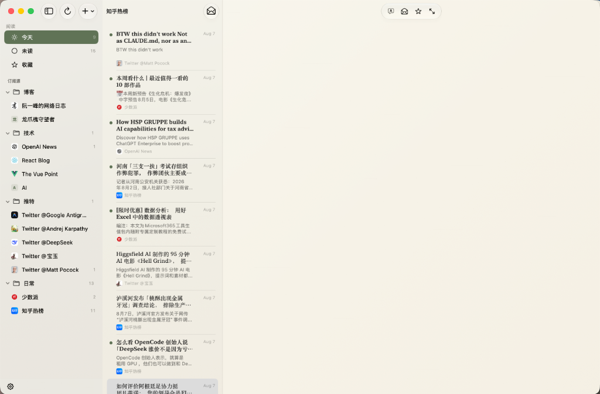
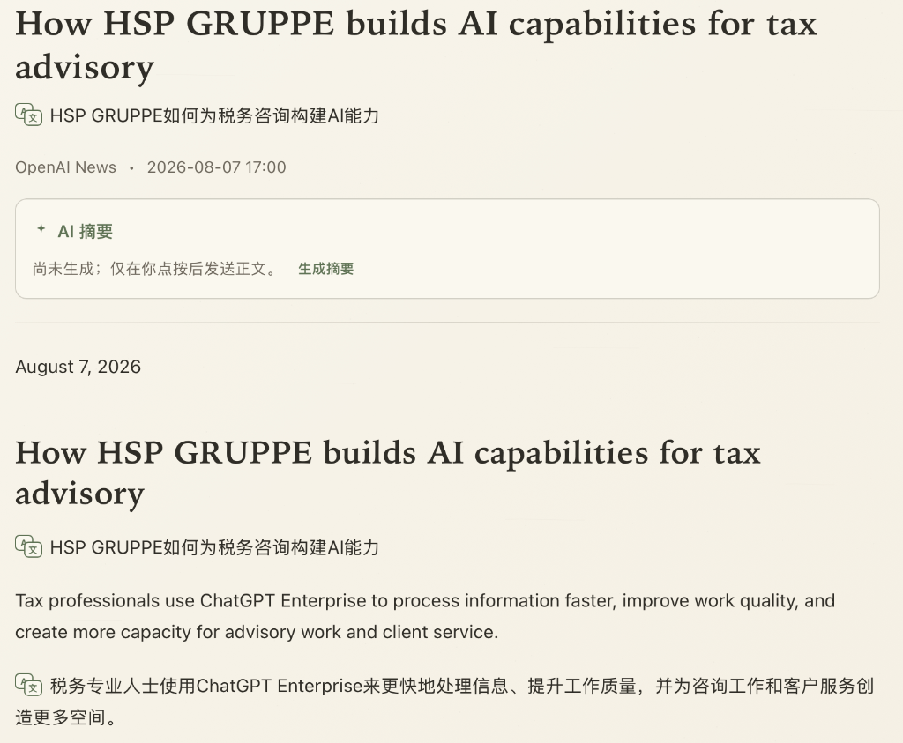
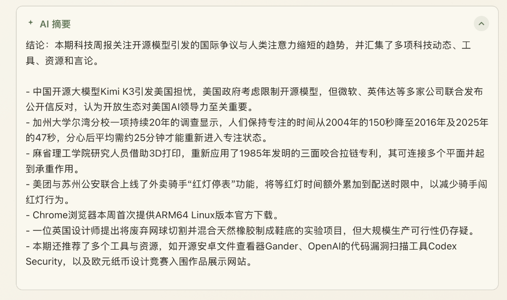
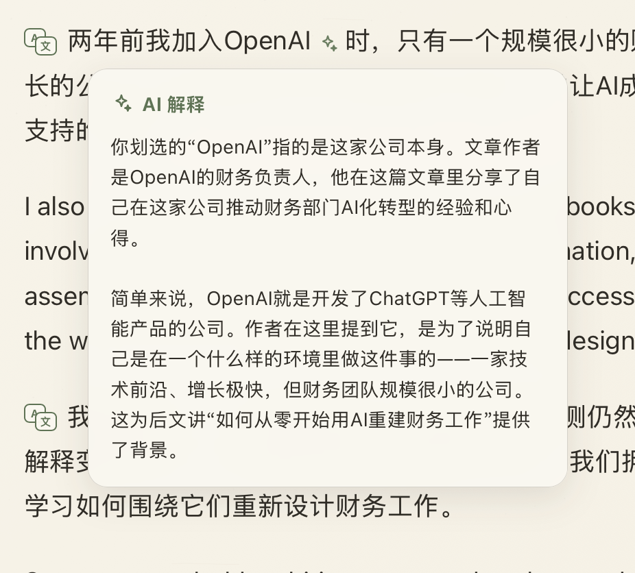
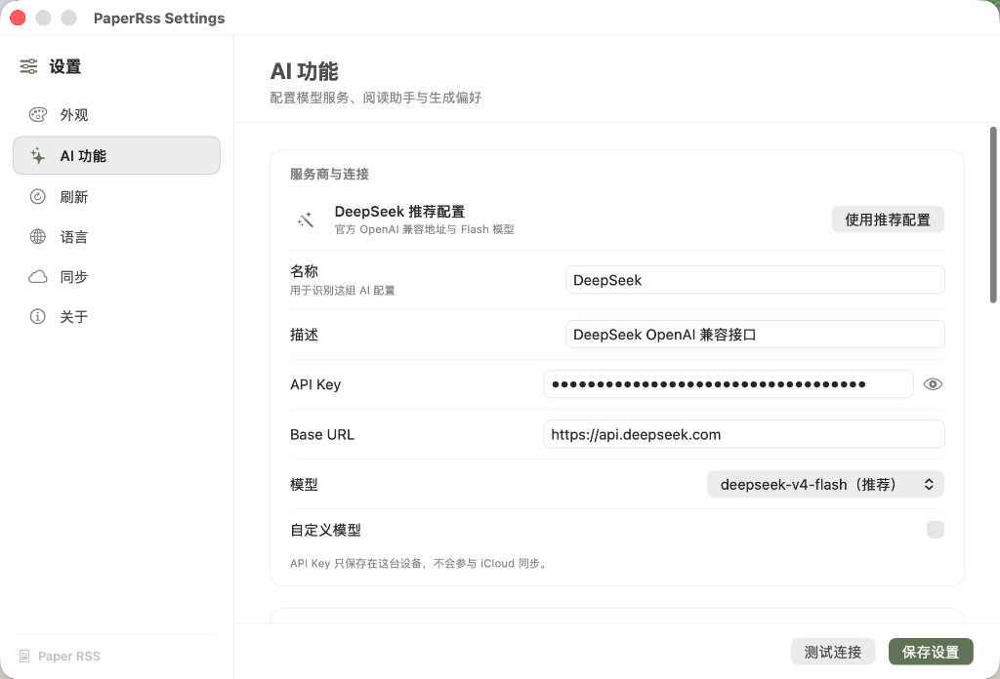
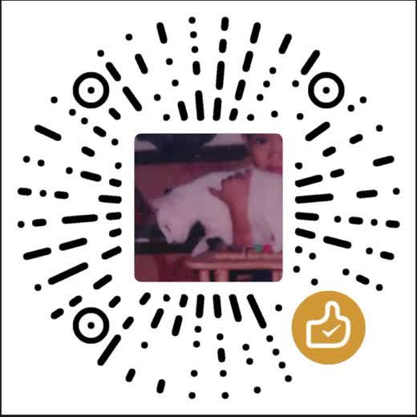

Bilingual & Restrained AI Reader · macOS Version
双语流转，克制智能化。
让阅读回归纯粹与沉浸。
没有喧宾夺主的 AI 噪声，只有恰到好处的全文摘要与划词双语翻译。把散落的全网订阅，还原为安静优雅的纸张阅读。

EDITORIAL EXPERIENCE
兼具美感与效能的阅读仪式
01 / DESIGN
沉浸式纸感排版
专为长文阅读微调的衬线字号与优雅行距。提供羊皮纸暖色调与深色暗夜模式，带来如实体杂志般的视觉温润感。

02 / SUMMARY
一键生成 AI 摘要
基于大语言模型的全文本分析，在阅读前快速提炼要点与要旨结论，高亮呈现最关键的观点与事实。

03 / TRANSLATE
划词双语解释与翻译
阅读外文资讯无缝衔接。滑动选中任何生词或段落，悬浮助手即刻给出精准上下文翻译与背景概念阐释。

AI POWERED ENGINE
灵敏的 AI 智能助手
Paper RSS 完美兼容 DeepSeek 官方 Flash / Pro 模型，以及任何标准的 OpenAI 兼容接口。你可以自由配置自定义 Prompt 指令、推理强度（Thinking effort）以及局域网自建模型 Endpoint。

支持 Paper RSS 持续进化
Paper RSS 是一款独立开发并开源的软件。如果您喜欢它的设计与功能，欢迎通过微信赞赏支持开发者，或在 GitHub 提交反馈！

微信扫码赞赏支持
INSTALLATION GUIDE
安装与安全说明
由于软件当前为个人独立构建开源版本（未付费购买 Apple 开发者公证证书），初次下载打开若提示“已损坏”或“无法打开”，请在终端执行以下清除隔离标记命令：
sudo xattr -rd com.apple.quarantine /Applications/PaperRss.app